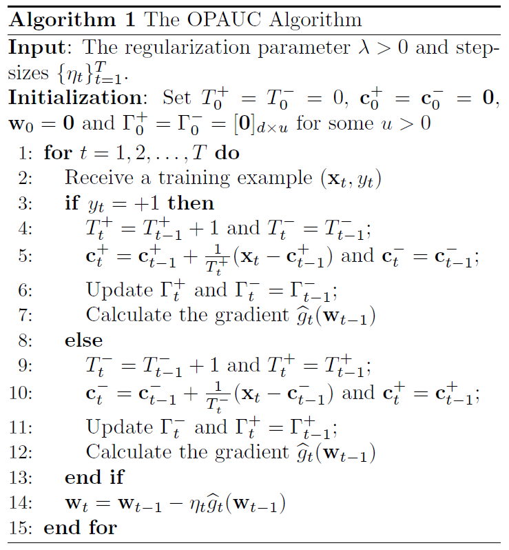
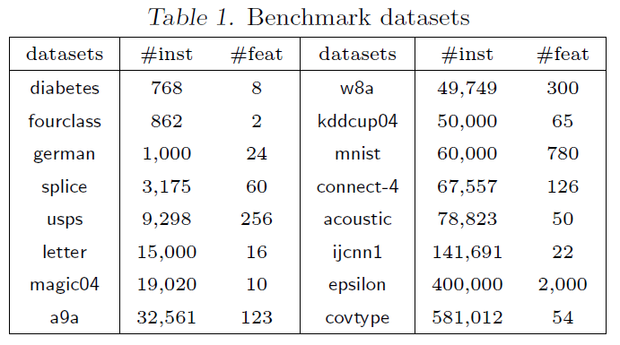
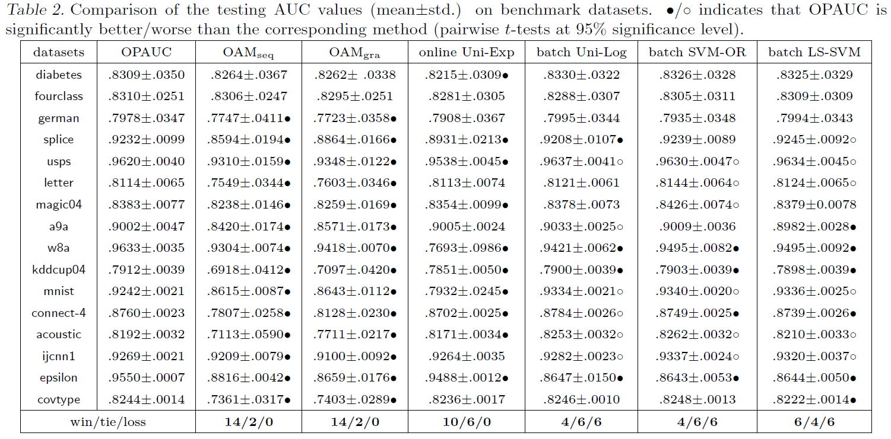

Gao et al., 2013, One-pass AUC optimization, ICML. pdf
\[\begin{equation} \sum_{i=1}^{n_{+}} \sum_{j=1}^{n_{-}} \frac{\mathbb{I}[f(\mathbf{x}_{i}^{+}) > f(\mathbf{x}_{j}^{-})]}{n_{+} n_{-}} \end{equation}\]
\[\begin{equation} L(\mathbf{w}) = \frac{\lambda}{2} \lVert \mathbf{w} \rVert _2^2 + \sum_{i=1}^{n_{+}} \sum_{j=1}^{n_{-}} \frac{(1 - \mathbf{w}^\text{T} (\mathbf{x}_i^+ - \mathbf{x}_j^-))^2}{2 n_{+} n_{-}} \end{equation}\]
\[\begin{equation} L_t(\mathbf{w}) = \frac{\lambda}{2} \lVert \mathbf{w} \rVert _2^2 + \frac{\sum_{i=1}^{t-1} \mathbb{I}[y_t \neq y_i](1 - y_t \mathbf{w}^\text{T} (\mathbf{x}_t - \mathbf{x}_i))^2}{2 \left| \{ i \in [t-1] : y_i y_t = -1 \} \right|} \end{equation}\]
\[\begin{equation} \begin{split} & a_t = \sum_{i=1}^{t-1} \mathbb{I}[y_t \neq y_i](1 - y_t \mathbf{w}^\text{T} (\mathbf{x}_t - \mathbf{x}_i))^2 \\[10pt] & A_n = \sum_{i=1}^{n_{+}} \sum_{j=1}^{n_{-}} (1 - \mathbf{w}^\text{T} (\mathbf{x}_i^+ - \mathbf{x}_j^-))^2 = a_1 + \cdots + a_n \end{split} \end{equation}\]
##### Toy example #####
n.pos <- 5
n.neg <- 10
n <- n.pos + n.neg
f.pos <- runif(n = n.pos, min = 0, max = 1)
f.neg <- runif(n = n.neg, min = -1, max = 1)
f <- c(f.pos, f.neg) # classifier output
y <- c(rep(1, n.pos), rep(-1, n.neg))
dt <- data.frame(y, f)
dt <- dt[sample(x = 1:n, size = n),]
dt <- data.frame(t = 1:n, dt)
rownames(dt) <- NULL
dt## t y f
## 1 1 -1 0.57115627
## 2 2 1 0.69148004
## 3 3 -1 0.65319819
## 4 4 -1 0.28752907
## 5 5 -1 -0.76962313
## 6 6 1 0.92191846
## 7 7 -1 0.13493007
## 8 8 1 0.09643691
## 9 9 1 0.94639890
## 10 10 -1 -0.90878564
## 11 11 -1 0.03024890
## 12 12 1 0.81600953
## 13 13 -1 0.84330899
## 14 14 -1 0.93284236
## 15 15 -1 0.67318396##### Define functions #####
fn.auc <- function(y, yhat) {
ix.pos <- which(y == 1)
ix.neg <- which(y == -1)
if (length(ix.neg) == 0 | length(ix.pos) == 0) {
stop(paste0("Positive: ", length(ix.pos), ", Negative: ", length(ix.neg)))
}
diff.pair <- sapply(X = yhat[ix.pos], FUN = function(x) {
return(x - yhat[ix.neg])
})
diff.pair <- as.numeric(diff.pair)
auc <- sum(diff.pair > 0) / (length(ix.pos) * length(ix.neg))
return(auc)
}
fn.A.n <- function(y, yhat) {
ix.pos <- which(y == 1)
ix.neg <- which(y == -1)
if (length(ix.neg) == 0 | length(ix.pos) == 0) {
stop(paste0("Positive: ", length(ix.pos), ", Negative: ", length(ix.neg)))
}
diff.pair <- sapply(X = yhat[ix.pos], FUN = function(x) {
return(x - yhat[ix.neg])
})
diff.pair <- as.numeric(diff.pair)
return(sum((1 - diff.pair)^2))
}
fn.a.t <- function(y, yhat) {
# Target: last element
ix.target <- length(y)
ix.pair <- which(y != y[ix.target])
if (length(ix.pair) == 0) {
stop(paste0("No data opposite in sign of y.target"))
}
diff.pair <- yhat[ix.target] - yhat[ix.pair]
return(sum((1 - y[ix.target] * diff.pair)^2))
}##### Result #####
res <- data.frame(dt, AUC = 0, A.n = 0, a.t = 0, cumsum.a.t = 0, AUC.square = 0, AUC.square.t = 0)
st <- which(diff(dt$"y") != 0)[1] + 1
for (t in st:n) {
# t <- st
res$"AUC"[t] <- fn.auc(y = dt$"y"[1:t], yhat = dt$"f"[1:t])
res$"A.n"[t] <- fn.A.n(y = dt$"y"[1:t], yhat = dt$"f"[1:t])
res$"a.t"[t] <- fn.a.t(y = dt$"y"[1:t], yhat = dt$"f"[1:t])
n.neg.t <- sum(res$"y"[1:t] == -1)
n.pos.t <- sum(res$"y"[1:t] == 1)
res$"AUC.square"[t] <- res$"A.n"[t] / (n.neg.t * n.pos.t)
res$"AUC.square.t"[t] <- res$"a.t"[t] / (n.neg.t * n.pos.t)
}
res$"cumsum.a.t" <- cumsum(res$"a.t")
res <- round(x = res, digits = 4)
res## t y f AUC A.n a.t cumsum.a.t AUC.square AUC.square.t
## 1 1 -1 0.5712 0.0000 0.0000 0.0000 0.0000 0.0000 0.0000
## 2 2 1 0.6915 1.0000 0.7738 0.7738 0.7738 0.7738 0.7738
## 3 3 -1 0.6532 1.0000 1.6987 0.9249 1.6987 0.8494 0.4625
## 4 4 -1 0.2875 1.0000 2.0540 0.3553 2.0540 0.6847 0.1184
## 5 5 -1 -0.7696 1.0000 2.2666 0.2126 2.2666 0.5667 0.0532
## 6 6 1 0.9219 1.0000 3.8348 1.5682 3.8348 0.4794 0.1960
## 7 7 -1 0.1349 1.0000 4.0768 0.2420 4.0768 0.4077 0.0242
## 8 8 1 0.0964 0.7333 11.1902 7.1134 11.1902 0.7460 0.4742
## 9 9 1 0.9464 0.8000 12.7447 1.5545 12.7447 0.6372 0.0777
## 10 10 -1 -0.9088 0.8333 14.5265 1.7818 14.5265 0.6053 0.0742
## 11 11 -1 0.0302 0.8571 15.5320 1.0055 15.5320 0.5547 0.0359
## 12 12 1 0.8160 0.8857 18.0414 2.5094 18.0414 0.5155 0.0717
## 13 13 -1 0.8433 0.8250 25.1284 7.0870 25.1284 0.6282 0.1772
## 14 14 -1 0.9328 0.7556 33.2841 8.1557 33.2841 0.7396 0.1812
## 15 15 -1 0.6732 0.7600 38.5614 5.2772 38.5614 0.7712 0.1055\begin{aligned} L_t() & = + _t _t^ - t + {i:y_i = -1} \[10pt] & = - _t + _t^- + (_t - _t^-)(_t - _t-) + S_t^- \end{aligned}
\[\begin{equation} c_t^- = \sum_{i:y_i = -1} \frac{\mathbf{x}_i}{T_t^-} \end{equation}\]
\[\begin{equation} S_t^- = \sum_{i:y_i = -1} \frac{\mathbf{x}_i \mathbf{x}_i^\text{T} - \mathbf{c}_t^- [\mathbf{c}_t^-]^\text{T}}{T_t^-} \end{equation}\]
\[\begin{equation} \nabla L_t(\mathbf{w}) = \lambda \mathbf{w} + \mathbf{x}_t - \mathbf{c}_t^+ + (\mathbf{x}_t - \mathbf{c}_t^+)(\mathbf{x}_t - \mathbf{c}_t^+)^\text{T} \mathbf{w} + S_t^+ \mathbf{w} \end{equation}\]
\begin{aligned} & t^+ = {t-1}^+ + + {t-1}^+ [_{t-1}^+]^ - {t}^+ [_{t}^+]^ \[10pt] & t^- = {t-1}^- + + {t-1}^- [_{t-1}^-]^ - {t}^- [_{t}^-]^ \end{aligned}

\[\begin{equation} \sum_t L_t (\mathbf{w}_t) - \sum_t L_t (\mathbf{w}_{\star}) \leq 2 \kappa B^2 + B \sqrt{2 \kappa T L^{\star}} \end{equation}\]

